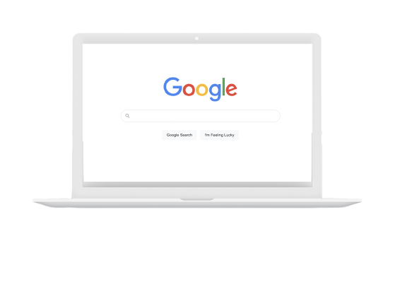
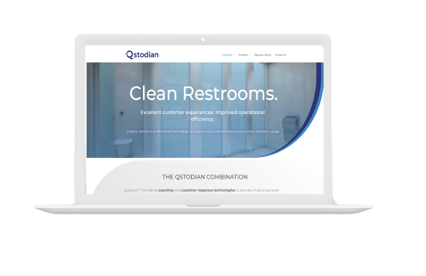

Bio
Hello there, my name is Kevin Eyram Harlley and this is my website. I am currently a final year dual degree Computer Engineering major at Washington University in St. Louis. As a dual degree student I received a Bachelor of Arts degree in Computer Science from my previous school (DePauw University)in addition to the Bachelor of Science I received on completion of my time at Washington University in 2020. I am expected to graduate in May of 2021 with a Master's in Engineering Management with a focus on DataAnalytics and am looking forward to what the future holds. I am highly interested in Robotics, Software Development and Data Science and would love to work in any of these industries. Thank you for taking the time to visit my website and I hope you have a great day wherever you are.

Skills and Technologies
CSS
Expert
Java
Expert
Microsoft Office
Expert
Adobe Photoshop, Fireworks, Edge-Animate, After-Effects
Expert
Python
Expert
Ajax
Proficient
MySQL
Proficient
PHP
Proficient
My Portfolio

Google XLS
During the summer of 2020, I assisted in the coding of Google's XLS toolchain. A link to the project can be found here.
Depauw Senior Project
You can find the link to the vendor project I worked on for my Computer Science major at DePauw University below.

Qstodian Website
During the summer of 2019, I assisted in the development of the website before the company's launch. A link to the website can be found here.
AI Energy Website
A link to the AI Energy website I worked on. Over the course of one year I made improvements to the layout of the website.
Other Relevant Experience
DePauw University - Research Assistant
May 2016 - August 2016
Researched into signals and brainwaves and designed a method to calculate a unique signature using an individual's brain response to set images
DePauw University - Information Technology Associate
August 2014 - August 2017
Managed school computer inventory including collection, distribution, installation, replacement and repair of computers, peripherals, office phones and A/V equipment.
Washington University in St. Louis - Media Intern
August 2018 - Present
Managed and maintained school media inventory.
TEIMS: Public Relations
Designed and produced newsletters and flyers for the Technology, Engineering, Information Management Society and managed external communications
African Students Association: President
Founded university’s first African Student Association and increased membership from 8 to 50 within a year.
CAS Project: Food and Drinks Committee Head
Managed the food and drinks committee of my year's CAS(Community, Action, Service) project.